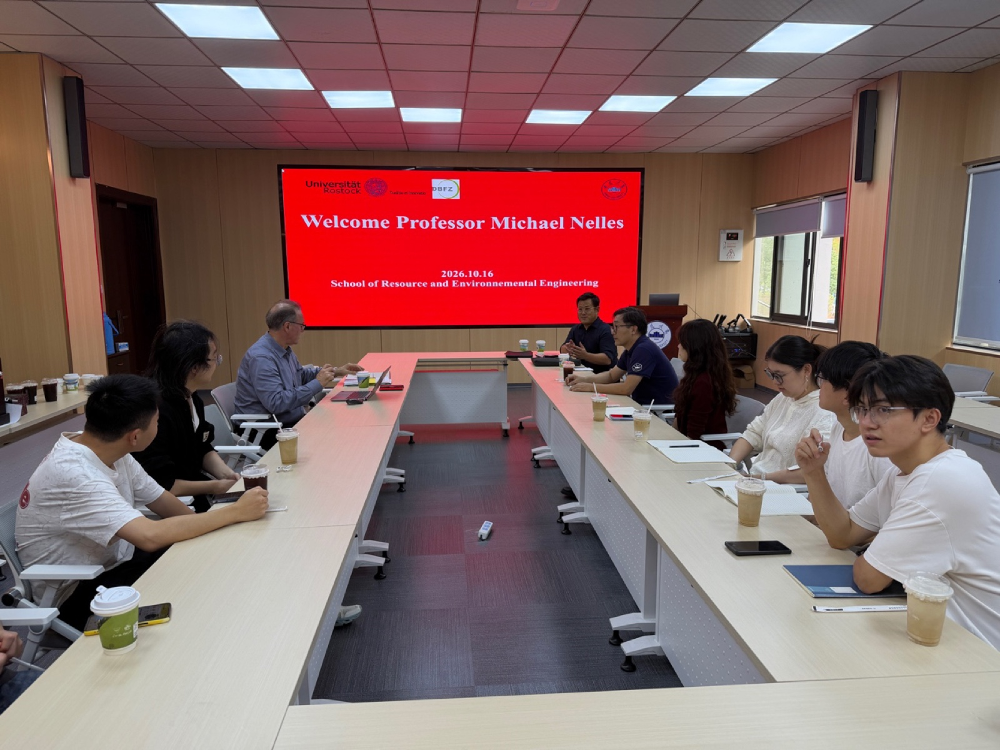

德国罗斯托克大学 Michael Nelles 教授来访交流
2026年10月16日，德国罗斯托克大学农业与环境科学学院 Michael Nelles 教授访问课题组并开展学术交流。
交流期间，Michael Nelles 教授详细介绍了德国碳中和与碳减排、固体废物处置及资源化与能源化利用、固体废物管理政策等方面的进展，并围绕安徽省固体废物管理和资源化处置提出了专业建议。

Michael Nelles 教授现任罗斯托克大学农业与环境科学学院废物与物质流管理讲席教授、德国国家生物质研究中心（DBFZ）学术主任，曾获中国政府友谊奖。